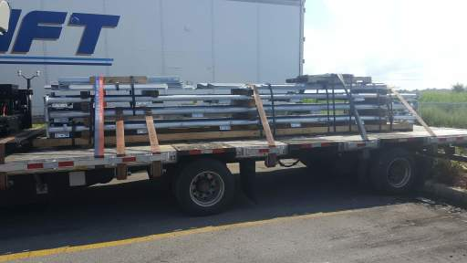
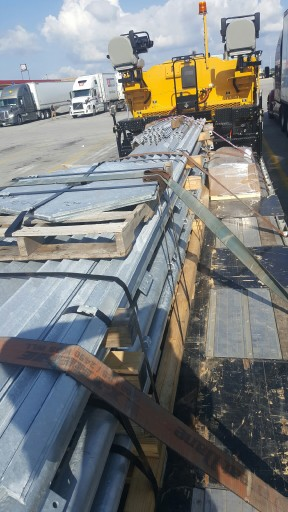
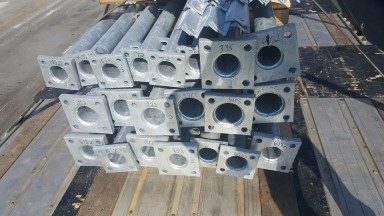

|
Home About VSI What We Do Who We Are Contact Info Resources Blog Data Archives Export |
Tower DeliveryDelivery
From the tower design paperwork I knew the total tower weight was about 9,000 pounds, but had no idea how that
would be packaged for delivery. The equipment I have available is a pneumatic tired forklift with
a lift capacity of 5,000 lbs (typical for a forklift) and 42" forks, and a fork attachment for the
front end loader (FEL) on my small diesel tractor. The FEL has a lift capacity of only about 1,500
pounds but a further reach. Given the weight of the shipment and that there were twenty-one tower legs twenty feet long,
weighing from 150 to 400 pounds each, it was a pretty good bet the delivery would be on a flatbed
trailer (which turned out to be the case).
If the load was distributed in multiple pallets or bundles of under 5,000 pounds then I could just lift the pallets or bundles directly off the flatbed. If not I'd either have to rent larger equipment or unload a piece at a time. On multiple occasions over a couple of months, each time it looked like we were close to having the tower finished, I begged the manufacturer to give me a heads-up on how the load would be packaged.
ShipmentSo at 5 PM on a Friday I get a terse E-mail message from the manufacturer saying the tower delivery would be the following Monday. No time, no carrier info, no details at all. Fortunately with a frantic series of phone calls I was able to talk to the shipping broker and eventually the truck driver. The driver (John) was great, he E-mailed me photos of the load:   One huge skid with all the major tower parts banded together, 9,300 lbs, and one small (500lb) pallet that presumably has the small hardware components (nuts and bolts). So much for picking pallets off the truck with a forklift. After pondering a bit and a phone call and E-mail exchanges with John, I decided to unload at the school bus turnaround about a quarter mile further down the road from my property. We'll obviously need to cut the bands on the big skip and pick up the tower legs one or two at a time. Those legs weight between 150 and 400 lbs each; to heavy for a couple of people to muscle around. I plan to pre-stage the tractor/FEL and some cribbing (4x4 lumber and a half dozen spare pallets) at the turnaround Monday morning. Then when the truck arrives I'll drive down to the turnaround in a pickup to meet it. We'll cut the bands and pick up the tower legs a piece or two at a time and restack on the ground. After the truck leaves I'll use my 16' flatbed equipment trailer to carry up to a half-dozen or so tower legs at a time to the tower site. With luck I'll have at least one volunteer helper to ferry me back and forth during that process, as I'll need at least a half-dozen rund trips. Aftermath |
|
|